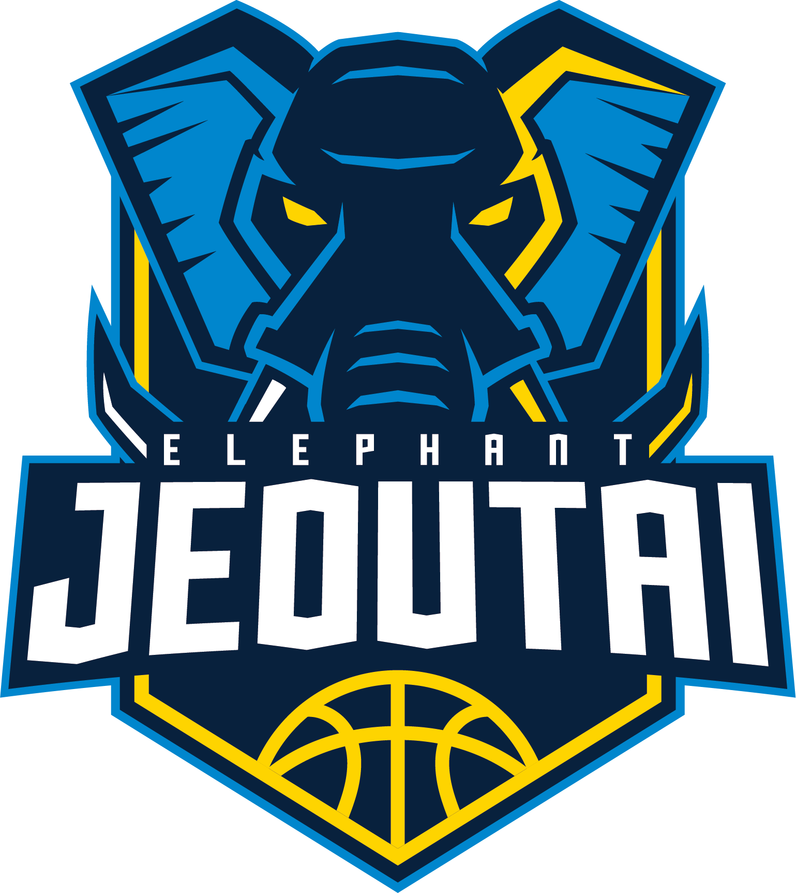

臺灣銀行（英語：Bank of Taiwan）是臺灣籃球隊，以成員身份參與超級籃球聯賽（SBL）賽事。1973年臺灣銀行在臺灣省政府主席謝東閔裁定下成立籃球隊，於1974年投入甲組籃球聯賽；並於2003成為超級籃球聯賽創始球隊。
臺灣銀行（英語：Bank of Taiwan）是臺灣籃球隊，以成員身份參與超級籃球聯賽（SBL）賽事。1973年臺灣銀行在臺灣省政府主席謝東閔裁定下成立籃球隊，於1974年投入甲組籃球聯賽；並於2003成為超級籃球聯賽創始球隊。
台灣啤酒
台灣啤酒（英語：Taiwan Beer）是臺灣籃球隊，以成員身份參與超級籃球聯賽（SBL）賽事，在2003年成為超級籃球聯賽創始球隊。
 裕隆納智捷（英語：Yulon Luxgen Dinos）是臺灣籃球隊，以成員身份參與超級籃球聯賽（SBL）賽事。球隊由裕隆汽車創辦人嚴慶齡組織創建，是台灣第一支民營籃球隊，也是中華職籃（CBA）、超級籃球聯賽創始球隊。2009年由「裕隆恐龍」更名為「裕隆納智捷」[1]。2012年2月4日，冠名新北為「新北裕隆納智捷」[2][3]。2021年因疫情關係跟台灣啤酒並列冠軍。
裕隆納智捷（英語：Yulon Luxgen Dinos）是臺灣籃球隊，以成員身份參與超級籃球聯賽（SBL）賽事。球隊由裕隆汽車創辦人嚴慶齡組織創建，是台灣第一支民營籃球隊，也是中華職籃（CBA）、超級籃球聯賽創始球隊。2009年由「裕隆恐龍」更名為「裕隆納智捷」[1]。2012年2月4日，冠名新北為「新北裕隆納智捷」[2][3]。2021年因疫情關係跟台灣啤酒並列冠軍。
裕隆納智捷
裕隆納智捷（英語：Yulon Luxgen Dinos）是臺灣籃球隊，以成員身份參與超級籃球聯賽（SBL）賽事。球隊由裕隆汽車創辦人嚴慶齡組織創建，是台灣第一支民營籃球隊，也是中華職籃（CBA）、超級籃球聯賽創始球隊。2009年由「裕隆恐龍」更名為「裕隆納智捷」[1]。2012年2月4日，冠名新北為「新北裕隆納智捷」[2][3]。2021年因疫情關係跟台灣啤酒並列冠軍。
高雄九太科技

高雄九太科技是臺灣籃球隊，球隊最前身是成立於1997年的大華建設，在宏福公羊解散後，接收大部份球員。2000年12月球隊更名為「九太科技」，並成為超級籃球聯賽（SBL）創始球隊，之後又曾先後改名為「東森羚羊」、「米迪亞精靈」、「金門酒廠」，九太科技於2019年8月回歸接手球隊。2020年2月接受高雄市政府冠名贊助，更名成「高雄九太科技」。2022年5月宣布解散[
桃園璞園建築
桃園璞園建築（英語：Taoyuan Pauian Archiland）是臺灣籃球隊，以桃園市作為球隊所在地，並以成員身份參與超級籃球聯賽（SBL）賽事。球隊最前身是成立於1986年的「麥當勞」。1989年12月17日由宏國建設接手，1994年成為中華職籃（CBA）創始球隊，取名「宏國象」，在中華職籃時期創下三連霸紀錄。2000年宏國象解散後，由新浪網接手成為「新浪獅」，前往中國大陸參與中國男子籃球職業聯賽（CBA），並由明基電通冠名為「明基新浪獅」，首賽季位居第八名，在第二個賽季排名倒數第二，後降級到甲B。2003年，新浪獅返回臺灣加入超級籃球聯賽。2005年，由新浪網董事長姜豐年投資的幼敏電銷贊助，球隊更名為「幼敏電銷」。2006年，由東風衛視贊助，更名為「東風老鷹」。2007年，由璞園建築團隊接手並更名為「璞園建築」。